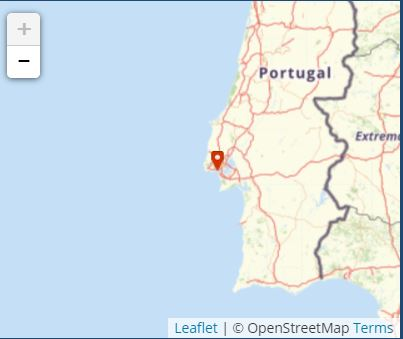
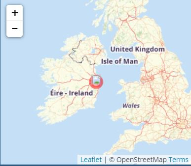
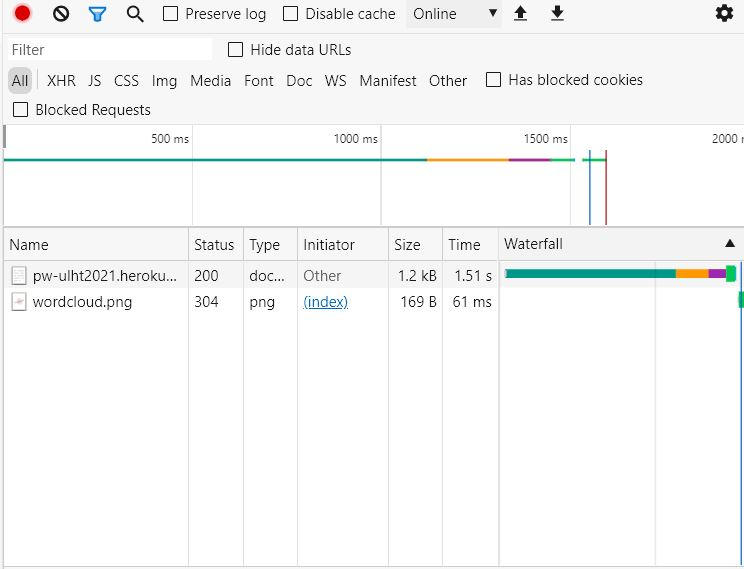

Informações pedidas
- informação sobre o IP do meu PC (Não tenho dados móveis de momento)

- Informação sobre o IP do servidor Heroku

- GeoTraceroute
- Imagem com info dos ficheiros descarregados

-
Quantos ficheiros são descarregados na sequencia de um clique num hiperlink?
R.: 2
- Quais o tipo de ficheiros, timings de espera e de descarga?
R.: 1 Document (62.25ms de loading time e 0.40ms de tempo de descarga) e 1
png (0.21ms de loading time e 0.62ms de tempo de descarga)
- O que observa quando clica em "preview" em inspecionar pagina?
R.: Apresenta o elemento como ficará no browser.
- O que observa quando clica "Headers" em inspecionar pagina?
R.: Apresenta várias informações acerca da comunicação HTTP (tanto pedido
como resposta)
- O que observa quando faz "Timing" em inspecionar pagina?
R.: Observa os vários tempos referentes ao pedido HTTP